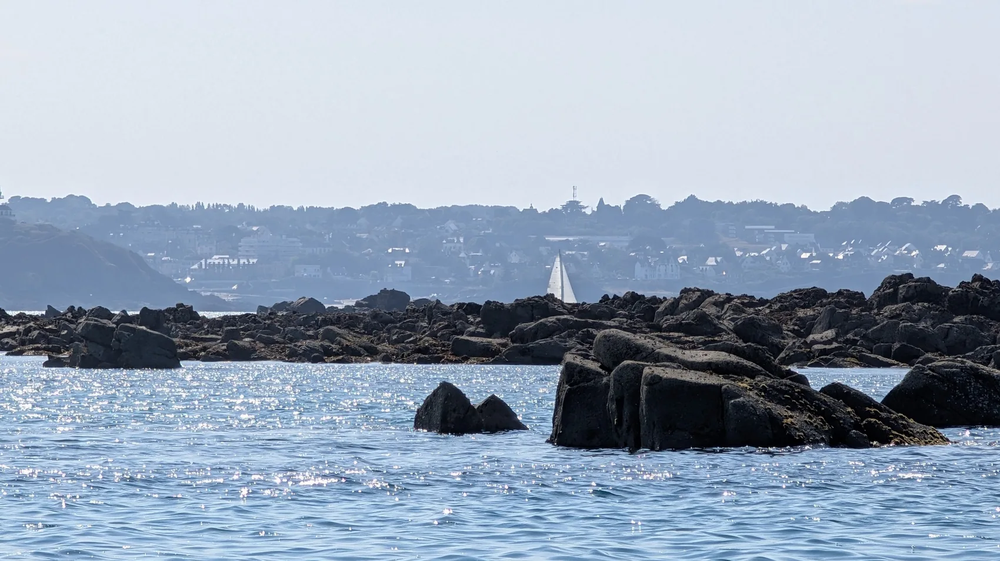

AVANT OU APRÈS LA SORTIE
Nettoyage & remise en ordre
Nettoyage intérieur et extérieur, préparation du bateau, remise en état courante : pour retrouver votre unité dans de bonnes conditions.
Demander un devis
Préparer une sortie, remettre votre bateau en ordre ou lui faire changer de port : Julien propose des prestations nautiques à la carte.
À Saint-Quay-Portrieux, à Binic et dans les ports des Côtes-d’Armor selon les prestations, ALN intervient au rythme de vos besoins.
Nettoyage intérieur et extérieur, préparation du bateau, remise en état courante : pour retrouver votre unité dans de bonnes conditions.
Demander un devis
Eau, carburant, ravitaillement et petits travaux d’entretien courant : définissez vos besoins et la fréquence souhaitée.
Décrire mes besoins
Vous changez de port, préparez une vente ou souhaitez acheminer votre bateau pour l’hivernage ?
Julien propose du convoyage de voiliers et bateaux à moteur, en particulier d’octobre à avril. Chaque mission est étudiée selon la distance, la météo et les caractéristiques du bateau.
Organiser un convoyagePas de prestation standard imposée : Julien étudie vos besoins et vous propose les modalités adaptées.
Port, type de bateau, date souhaitée et prestation attendue.
Disponibilité, faisabilité, sécurité et conditions d’intervention.
Un devis est établi avant toute intervention, selon la nature du service.
Conciergerie et convoyage : parlons de votre bateau et des services qui pourraient vous simplifier la vie.